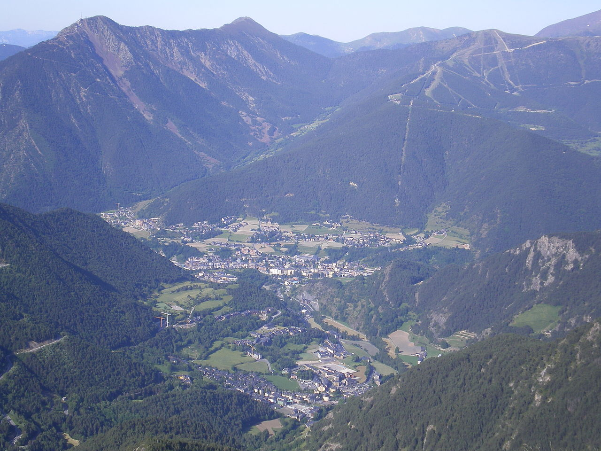

La Massana
-
Arinsal
- Coll de la Botella
- Vallnord

Arinsal es un precioso pueblo rodeado de verde naturaleza, y casas tradicionales de piedra que dentro albergan varios de los mejores restaurantes de Andorra con soleadas terrazas al lado del río.
Por la noche, Arinsal dispone de la mayor concentración de ambiente joven y pubs de Andorra. Que no os sorprenda si en algún restaurante o pub os atienden en Inglés, ya que es el destino por excelencia de los turistas
ingleses en Andorra.
Si el esquí forma parte de vuestro viaje, os interesará saber que desde el cenrtro de Arinsal sale un telecabina hacia las pistas de esquí de Vallnord.